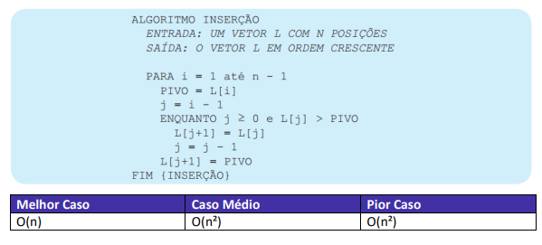
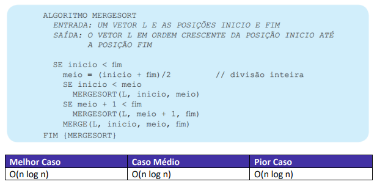

Aula 00 - Lógica de Programação
Programação
Com a programação, podemos criar diversos tipos de aplicativos:
- Aplicativos web (sites interativos)
- Aplicativos de gestão empresarial (ERP)
- Jogos
- Entre muitos outros
Um computador, por natureza, é “burro e preguiçoso”: ele não sabe o que fazer, e só irá fazer algo a pedido de um terceiro, nunca pela sua própria vontade. A programação computacional vista justamente dizer ao computador o que fazer.
Essas orientações ao computador são escritas a partir de algoritmos.
Algoritmo
Um algoritmo é uma sequência finita de instruções bem definidas e não ambíguas que descrevem um processo ou conjunto de operações a serem executadas para resolver um problema específico. Essa instruções são lidas e interpretadas em uma ordem específica, usualmente na ordem em que são escritas no código.
Algoritmos são instruções que visam dar uma solução a um problema
Saindo do mundo computacional, imagine que você tem uma decisão a tomar - pense que sua namorada (o) está exigindo veementemente que você a leve ao cinema. Diante desse cenário, você concorda e decide ir ao cinema. O objetivo final é assistir ao filme, então você faz uma sequência de passos:
- Veste uma roupa cheirosa e limpa
- Passa para pegar sua companhia
- Escolhe uma sessão
- Compra os ingressos para o filme
- Assiste ao filme
Então, um algoritmo para a situação narrada acima pode ser:
| Pseudocódigo |
| Início |
| preparação( ) { |
| colocar a roupa, |
| pegar a companhia, |
| ir ao cinema |
| } |
| filme( ) { |
| escolher sessão, |
| comprar ingresso, |
| assistir ao filme |
| } |
| Fim |
E pronto, você cumpriu o seu objetivo - que era assistir ao filme no cinema. Porém, no meio desse caminho podem existir situações que impedem a consecução do objetivo, como o fato do filme não estar mais em exibição, ou estar com uma sessão lotada. Na computação, a programação visa, através dos algoritmos, justamente dar instruções gerais e alternativas, para lidar com os percalços, visando chegar num objetivo aceitável.
Linguagens de Programação
Uma linguagem de programação é um conjunto de regras, símbolos e convenções que permitem que programadores escrevam instruções que um computador pode entender e executar. Essas instruções, chamadas de código-fonte, são escritas em um formato compreensível para humanos, mas devem ser traduzidas para uma forma que o computador possa entender e executar, geralmente na forma de código de máquina.
Podemos dividir as linguagens de programação conforme alguns grupos distintos, dependendo doque estamos analisando. Por exemplo, podemos classificar:
- Nível de Abstração:
- Linguagens de baixo nível: São mais próximas da linguagem de máquina e fornecem um controle direto sobre o hardware do computador. Exemplos incluem Assembly.
- Linguagens de alto nível: São mais abstratas e fornecem construções mais poderosas e expressivas. Exemplos incluem Python, Java, C++.
- Paradigma de Programação:
- Imperativa: As instruções são executadas sequencialmente, alterando o estado do programa através de atribuições. Exemplos incluem C, Fortran.
- Orientada a Objetos: Os programas são organizados em torno de objetos que podem conter dados e métodos. Exemplos incluem Java, C++.
- Funcional: Os programas são construídos com funções puras que evitam efeitos colaterais. Exemplos incluem Haskell, Lisp.
- Lógica: Os programas são construídos em torno de regras lógicas e inferências.Exemplos incluem Prolog.
- Propósito:
- Geral: São usadas para uma ampla variedade de aplicações. Exemplos incluem Python, C++.
- Específica de Domínio: São otimizadas para resolver problemas em um domínio específico. Exemplos incluem SQL para bancos de dados, MATLAB para computação numérica.
- Compilação:
- Compiladas: São traduzidas integralmente para código de máquina antes da execução. Exemplos incluem C, C++.
- Interpretadas: São executadas linha por linha por um interpretador. Exemplos incluem Python, JavaScript.
Variáveis e Constantes
Conceitos gerais
Quando estamos programando, pode ser necessário armazenar algum tipo de valor, de dado, no conjunto de instruções que estamos passando ao computador.
A programação tem um tipo de estrutura específica para lidar com isso: são as variáveis. As variáveis representam locais de armazenamento na memória do computador onde valores podem ser guardados e manipulados durante a execução de um programa. Cada variável possui um nome único que a identifica e um tipo de dado que determina o tipo de informação que pode ser armazenada nela.
Uma variável é composta de três partes distintas:
- Identificador (ou nome)
- Tipo de dado
- Valor
| Variáveis | ||
|---|---|---|
| Tipo de dado | Identificador | Valor |
| int | idade | 31 |
| string | frase | parabéns pela aprovação! |
| float | nota | 5.5 |
| boolean | resposta | verdadeiro |
O identificador será responsável por, justamente, identificar uma variável de forma inequívoca. É, basicamente, o nome da variável. Então, por exemplo, podemos criar uma variável “Fome”, que irá comportar o valor sobre o estado de fome atual, ou a variável “Cor_Cabelo”, que irá receber valores para cor de cabelo.
O tipo de dado refere-se ao formato do valor que será alocado à variável. Cada linguagem específica trabalha com tipos de dados diferentes, mas, de forma geral, podemos definir alguns tipos de dados básicos - e que usaremos hoje:
- Caracteres - string > um conjunto de caracteres alfanuméricos. Exemplo: "Você será aprovado, Coruja!"
- Números inteiros - int > números do tipo inteiro. Exemplo: 4, 9, 13, 293
- Números decimais - double ou float > números de precisão decimal. Exemplo: 4.91
- Lógico - boolean > valores lógicos. Exemplo: Verdadeiro, Falso.
Então, uma variável do tipo string comportará um conjunto de caracteres, usualmente formando algum tipo de texto. Especificamente nesse caso, as strings são delimitadas pelo uso de aspas - podendo ser aspas simples ´string´ ou aspas duplas “string”. Isso é um ponto muito importante, e cobrado muito pelas bancas, veja os seguintes valores:
- 5
- “5”
Se formos fazer uma comparação restrita, isso é, verificando tanto o valor quanto o tipo do dado anotado, veremos que os dois valores são diferentes. Portanto, 5 ≠ “5”. Isso, pois a notação 5 indica que estamos trabalhando com um tipo numérico inteiro, e a notação “5” com uma string de caracteres.
Outro ponto que é importante destacar sobre os tipos de dado é a tipagem. A tipagem diz respeita à forma como as linguagens lidam com as definições de tipos de dado. Cada linguagem de programação pode ter propriedades diferentes quanto à força da tipagem e quanto à dinamicidade da tipagem. A força da tipagem diz respeito à rigidez ou flexibilidade de uma linguagem com relação aos tipos de dados de uma variável.
No aspecto de força, uma linguagem pode ser:
- Fortemente tipada: o escopo do tipo de dado não é flexível, não permitindo, portanto, operações entre tipos de dados distintos - assim, é exigida uma transformação explícita dos dados ao mesmo tipo antes de operações, caso contrário a operação apontará erros. Exemplo de linguagens fortemente tipadas incluem Python e Java.
- Fracamente tipada: temos um escopo flexível para cada variável, permitindo operações entre diferentes tipos sem a necessidade de uma transformação de tipo de dado explícita, já que a linguagem irá fazer a conversão implicitamente. Exemplos de linguagem incluem JavaScript e PHP.
Já a dinamicidade da tipagem diz respeito sobre a capacidade de uma linguagem determinar o tipo de variável durante a execução de um programa. Uma linguagem pode ser também de dois tipos, quanto à dinamicidade:
- Tipagem dinâmica: o tipo é definido com base no valor que está sendo atribuído, sem necessidade de indicação expressa do tipo de dado. Exemplo: JavaScript e Python.
- Tipagem estática: a linguagem é incapaz de definir, por ela mesma, o tipo de dado apenas com base no valor - nesse caso, é necessária uma declaração explícita do tipo de dado junto da variável. Exemplo: Java, C++.
| Propriedades do Tipo | |||
|---|---|---|---|
| Força | Dinamicidade | ||
| Tipagem fraca | Tipagem forte | Tipagem dinâmica | Tipagem estática |
E, por fim, temos o valor da variável. É nele que declaramos o que a variável comportará, seu conteúdo. Esse valor, por estarmos tratando de uma variável, é, justamente, variável. Ele poderá ser modificado ao longo da execução de um código sem nenhum problema maior. Em contraponto a isso, temos as constantes. Valores armazenados em uma constante não podem ser alterados depois de declarados e atribuídos.
Variável > Valor pode ser alterado
Constante > Valor não pode ser alterado
Declarando variáveis
Agora que você sabe o que é uma variável, precisamos aprender a declará-la. Já fizemos isso lá em cima, quando dei o exemplo de uma variável idade a vocês. Cada linguagem tem uma forma diferente, veja como funciona em diferentes linguagens:
| JavaScript |
| let melhorCurso = "Estratégia" |
| Python |
| melhorCurso = "Estratégia" |
| R |
| melhorCurso ‹- "Estratégia" |
| Java |
| String melhorCurso = "Estratégia" |
Essas variáveis podem ser usadas em todo o programa? A resposta é: depende.
Aas variáveis têm uma propriedade chamada de escopo. O escopo define onde poderemos usar nossa variável dentro do programa, do código da aplicação. De forma geral, temos dois tipos de escopo:
- Escopo global: as variáveis podem ser acessadas (usadas) em qualquer ponto do código, seja fora ou dentro um outro bloco de código interno, como funções, métodos, classes etc.
- Escopo local: são acessíveis somente no contexto em que foram criadas. Por exemplo, uma variável criada dentro de uma classe, só é utilizada dentro dessa classe.
| Escopo de uma variável | |
|---|---|
| Global | Local |
Ordem de leitura
Temos três tipos de estruturas num código, que delimitam a ordem de leitura das instruções:
- Estrutura sequencial: é a estrutura geral do código, que exige uma leitura sequencial do código, na ordem em que ele aparece.
- Estrutura de seleção: são estabelecidas por sintaxes condicionais, e delimitam que apenas uma das opções deve ser escolhida. Exemplo dessa estrutura são os bloco Se...então.
- Estrutura de iteração/repetição: define um bloco de código que deve ser repetido enquanto determinada condição for obedecida. Exemplo dessa estrutura são os blocos Enquanto.
Quando estamos encarando a estrutura sequencial, determinada linha de código não tem conhecimento de nada que está escrito após ela - por isso, não podemos acessar o valor de variáveis antes de declará-las.
Outro ponto importante na leitura e interpretação de códigos é a indentação - esses pequenos espaços deixados antes de começarmos um código, à esquerda dele. Ela permite uma leitura mais limpa do código, garantindo a correta interpretação da hierarquia entre os diversos objetos de um código - inclusive, em alguns formatos de arquivos de marcação, como YAML, e linguagens de programação, como o Python, a indentação é obrigatória e serve como parâmetro de interpretação do arquivo.
Lembre-se: sempre endente seu código.
Operadores
Os operadores, sejam eles os matemáticos, como soma + e diferença -, ou até mesmo os comparativos, como o “maior ou igual” ≥. Na programação, esses operadores também estão presentes e ocupam um papel de destaque.
Temos 3 grupos diferentes de operadores: os operadores matemáticos, os operadores relacionais e os operadores lógicos. Vamos conhecê-los!
Operadores matemáticos
Os operadores matemáticos são operadores que visam trazer operações matemáticas para o contexto da programação. Com ele, podemos criar expressões matemáticas, equações, e outras operações. Vamos a uma tabela-resumo.
| Operador | Símbolo | Exemplo |
|---|---|---|
| Adição | + | 4 + 4 == 8 |
| Subtração | - | 4 - 3 == 1 |
| Multiplicação | * | 4 * 3 == 12 |
| Divisão | / | 6 / 3 == 2 |
| Divisão inteira | / | 6 / 4 == 1 |
| Exponenciação | ^ | 3^2 == 9 |
| Módulo (resto) | % | 3%2 == 1 |
| Incremento | ++ | ++4 = 5 |
| Decremento | -- | --4 = 3 |
Soma de Strings
Esse tipo de operação, na computação, recebe um nome especial: concatenação. A concatenação de textos é uma operação que faz, basicamente, a junção de dois blocos de texto. Veja, em código, como ela funciona:
| Pseudocódigo |
| String nome = "Felipe"; |
| String sobrenome = "Martins"; |
| String nomeCompleto = nome + sobrenome; |
| Escrever (nomeCompleto) //função para mostrar o valor no terminal |
| FelipeMartins |
Operadores Relacionais
Os operadores relacionais são direcionados a criar relações, comparações entre diferentes elementos. Então, temos operadores como “igual a”, “maior que”, entre outros. É importante ressaltar que o retorno de um operador relacional sempre será um valor booleano. Ou seja, o valor será verdadeiro, ou falso.
Os operadores são:
| Operador | Símbolo | Exemplo |
|---|---|---|
| Igualdade | == | 4 == 4 ⇒ verdadeiro |
| Diferença | != ou <> | 4 != 4 ⇒ falso |
| Maior que | > | 4 > 3 ⇒ verdadeiro |
| Menor que | < | 4 < 3 ⇒ falso |
| Maior ou igual a | >= | 4 >= 4 ⇒ verdadeiro |
| Menor ou igual a | <= | 4 <= 4 ⇒ verdadeiro |
Operadores Lógicos
Os operadores lógicos são operadores que introduzem as operações de lógica booleana, aquela que vemos junto de raciocínio lógico matemático, dentro do panorama de programações. Na lógica booleana, temos 2 valores: valores verdadeiros, e valores falsos. Dados esses valores, podemos fazer comparações lógicas entre eles, através de 3 operadores:
- E
- OU
- NÃO (ou NEGAÇÃO)
Nos operadores relacionais, a saída será um valor booleano a partir da comparação de dois valores quaisquer. Aqui nos operadores lógicos, a saída também será um valor booleano - porém, estamos comparando outros dois valores booleanos.
E lógico (conjunção)
O comparador E lógico é usado para comparar duas expressões booleanas e resulta em verdadeiro apenas se ambas as expressões forem verdadeiras. Se uma das expressões for falsa, o resultado da operação será falso. Então, podemos ter os seguintes casos, considerando dois valores booleanos distintos:
- Verdadeiro E Verdadeiro ⇒ Verdadeiro
- Verdadeiro E Falso ⇒ Falso
- Falso E Verdadeiro ⇒ Falso
- Falso E Falso ⇒ Falso
OU lógico (disjunção)
Com o comparador OU lógico, comparamos duas expressões lógicas e temos como resultado o valor verdadeiro se algum dos dois valores comparados, ou ambos, forem verdadeiros. Ou seja, só retornaremos falso se todos os elementos forem falsos. Então, teremos os seguintes casos:
- Verdadeiro OU Verdadeiro ⇒ Verdadeiro
- Verdadeiro OU Falso ⇒ Verdadeiro
- Falso OU Verdadeiro ⇒ Verdadeiro
- Falso OU Falso ⇒ Falso
NÃO lógico (negação)
O último comparador não é bem uma comparação, já que, diferentemente doas anteriores, ele não compara dois valores, ele age em um único valor. O NÃO é responsável por “inverter” o valor de uma variável - ou seja, se ela é verdadeira, a o NÃO irá a transformar em falsa; se for falsa, o NÃO irá a transformar em verdadeira. Então, temos os seguintes casos:
- NÃO Verdadeiro ⇒ Falso
- NÃO Falso ⇒ Verdadeiro
Estruturas Condicionais
Na computação não é diferente, precisamos pensar em diversas situações diferentes para que um programa lide com elas. Para esses casos, surge uma estrutura basilar em toda a programação - as estruturas condicionais. Temos duas estruturas principais que você precisa saber e entender: o Se...então e o Escolha...caso.
Essas estruturas são chamadas de estruturas de seleção, pois deve-se selecionar um caminho para ser seguido. Vamos entender cada uma das estruturas.
Se...então
O Se...então (ou If...Then, em inglês) é a estrutura básica das condicionais em programação. Nela, analisamos determinada situação, se ela for verificada, ou seja, se a comparação feita for de valor Verdadeiro, executaremos determinado bloco de código. Veja que aqui iremos usar os operadores lógicos e relacionais.
Essa condicional será composta de duas partes:
- Se (comparação) → é a comparação que será verificada, e só será aceita se o valor em (comparação) for verdadeiro
- Então: -bloco de código- → é o bloco de código executado se for a
Exemplo de código:
| Pseudocódigo |
| String Nota_do_aluno = 6; |
| String Situação_do_aluno = " "; |
| Se (Nota_do_aluno > = 7) Então: |
| Situação_do_aluno = "Aprovado"; |
| Se (Nota_do_aluno < 7 && Nota_do_aluno > = 5) Então: |
| Situação_do_aluno = "Recuperação"; |
| Senão: |
| Situação_do_aluno = "Reprovado"; |
| Fim Se |
| Escrever (Situação_do_aluno) |
| Recuperação |
Escolha...caso
O Escolha...caso (também chamado de Switch...case) é um formato de condicional para seleções múltiplas, adequado quando temos um conjunto de condições serem verificadas. Cada caso irá analisar uma condição diferente, e, se for verificada a condição desse caso específico, ela será implementada. Terminamos o bloco de Escolha...caso com um senão, que será uma opção residual: se nenhuma outra condição tiver a sua veracidade verificada, ativaremos esse bloco.
Exemplo de código:
| Pseudocódigo |
| String Nota_do_aluno = 6; |
| String Situação_do_aluno = " "; |
| Escolha |
| Caso (Nota_do_aluno > = 7) Faça: |
| Situação_do_aluno = "Aprovado"; |
| Caso (Nota_do_aluno < 7 && Nota_do_aluno > = 5) Faça: |
| Situação_do_aluno = "Recuperação"; |
| Senão: |
| Situação_do_aluno = "Reprovado"; |
| Fim Escolha |
| Escrever (Situação_do_aluno) |
| Recuperação |
Estruturas de Repetição
Imagine que você precise criar um código que irá Escrever, no terminal, os números de 1 a 1.000.000. De uma forma rudimentar, baseada na “força bruta”, você poderia escrever o código da seguinte forma:
| Pseudocódigo |
| Escrever(1) |
| Escrever(2) |
| Escrever(3) |
| ... |
| Escrever(999999) |
| Escrever(1000000) |
Já pensou o trabalho que seria escrever cada uma dessas linhas? 1 milhão de linhas para um programa relativamente simples. Para resolver esses problemas, assim como implementar mais dinamicidade nos códigos, entram em voga as estruturas de repetição (também chamadas de estruturas de iteração) . Nela, repetiremos determinado bloco de código conforme a condição de verificação. Esse tipo de estrutura pode ser chamada de loop, em inglês, e cada repetição do bloco é chamada de iteração, ou laço.
Temos 4 formas de repetição que iremos abordar:
- Enquanto
- Repita...até
- Faça...enquanto
- Para
Enquanto
O Enquanto (ou While) é uma estrutura de repetição que irá repetir determinado bloco de código enquanto a condição de verificação tiver valor Verdadeiro. Aqui, a verificação é feita antes de iniciarmos a execução, se o valor for verdadeiro, seguimos em frente na execução; caso contrário, a repetição é terminada.
Vamos refazer a nossa contagem de 1 a 1.000.000 com a estrutura do Enquanto. Para isso, criaremos uma variável para comportar os números, chamada de contagem, e, a cada laço do Enquanto, iremos fazer um incremento nessa variável, usando o operador ++. Lembrando que esse código será executado enquanto a variável contagem for menor ou igual a 1.000.000. O código ficará da seguinte forma:
| Pseudocódigo |
| int contagem = 1 |
| Enquanto (contagem < = 1000000) Faça: |
| Escrever(contagem) |
| contagem++ |
| Fim Enquanto |
Repita...Enquanto
A segunda forma de estrutura de repetição, o Repita...até, que também pode aparecer como Faça...até, é uma estrutura muito similar ao enquanto - porém, a verificação da condição é feita após a execução do bloco de código. Então, aqui, mesmo que a condição não seja satisfeita, iremos executar o bloco de código ao menos uma vez. Além disso, aqui o bloco de código é executado enquanto a condição for falsa. Se a condição for implementada, verdadeira, sairemos do bloco.
Vamos pegar o mesmo código que usamos anteriormente, no Enquanto, e aplicá-lo aqui.
| Pseudocódigo |
| int contagem = 1 |
| Repita: |
| Escrever(contagem) |
| contagem++ |
| Até (contagem > 1000000) |
| Fim Repita |
Se você respondeu 1.000.001, parabéns! Você entendeu a ordem de interpretação de um código. Veja bem, quando tivermos o valor 1.000.000, a verificação contagem ≤ 1.000.000 ainda será verdadeira - o que quer dizer que iremos executar mais uma vez o código. Dessa vez, o valor de contagem será levado a 1.000.001, e, na verificação da condição, não teremos mais o valor Verdadeiro e iremos romper o loop.
Faça...Enquanto
O Faça...enquanto, ou Do...while, é uma estrutura de repetição muito semelhante ao Repita...até, mas com algumas diferenças “grandes”. Ele também executará, obrigatoriamente, um bloco de código - e irá executá-lo repetidas vezes, desde que a condição de verificação seja verdadeira.
Veja que já temos uma primeira diferença - o Faça...enquanto irá executar as instruções enquanto a condição for verdadeira. Uma segunda diferença é o momento da verificação da condição: apesar de executar um bloco independentemente do que ocorra, o Faça...enquanto verifica a condição antes de executar o bloco uma vez, enquanto o Repita...até verifica depois. Então, resumindo:
| Aspecto | Repita...até | Faça...enquanto |
|---|---|---|
| Tipo de Estrutura | Repetição (loop) | Repetição (loop) |
| Executa o bloco ao menos uma vez | Sim | Sim |
| Verificação de condição | Depois de executar o primeiro bloco | Antes de executar o primeiro bloco |
| Encerramento do Loop | Quando a condição se tornar VERDADEIRA | Quando a condição se tornar FALSA |
Para
A estrutura de repetição Para é uma estrutura destinada a uso quando você já sabe quantas iterações, quantos laços do loop você quer que sejam realizados. No Para, definimos um valor inicial, um valor final e quanto esse valor será incrementado (ou decrementado) a cada laço - servindo como forma de controle para quantas iterações teremos.
O uso do Para passa a ser interessante quando o valor da variável local declarada é útil para o contexto do loop. Por exemplo, na nossa contagem de 1 a 1.000.000, podemos fazer a execução do nosso programa numa forma bem reduzida. Aqui, utilizarei a variável local i, que iniciará em 0 e irá até 1.000.000, incrementando em 1 unidade a cada laço. Utilizarei essa mesma variável local no comando Escrever(), dentro do bloco de código, para que esse valor seja impresso. Veja como diminuímos o tamanho do código:
| Pseudocódigo |
| Para i de 1 a 1000000 Faça |
| Escrever(contagem) |
| Fim Para |
Estruturas de Desvio
Pode ser que determinadas linhas de código só precisem ser executadas se determinada condição for (ou não for) satisfeita. Por exemplo, se determinada condição for falsa, pode ser que tenhamos que executar uma série de salvaguardas para proteger a aplicação, como numa tentativa de invasão de hackers. Porém, se a condição for verdadeira, esse determinado bloco não seria executado.
Embora muitas estruturas que vimos podem agir implementando esse “salto” de linhas, como, por exemplo, uma estrutura condicional, temos uma estrutura específica para esses casos: é a estrutura de desvio incondicional - representada nos algoritmos por Vá para, ou, em inglês, Go to. Apesar de não termos essa limitação em pseudocódigo, essa estrutura de desvio não é suportada nativamente por diversas linguagens, necessitando de uma adaptação através de funções.
Veja um exemplo:
| Pseudocódigo |
| Inicio |
| int nota |
| String situaçao |
| Se (nota > = 7 ) Então |
| Situaçao = "Aprovado" |
| Vá_para Fim |
| Fim Se |
| Função Prova_de_Recuperação( ) { |
| //bloco de código |
| } |
| Se (nota < 5) Então |
| Situaçao = "Reprovado" |
| Fim Se |
| Fim |
No exemplo acima, pularemos toda a parte do código necessário para gerar uma prova de recuperação, caso a nota do aluno seja maior ou igual a 7. Outros casos comuns de uso do Vá para envolvem loops aninhados - onde, se determinada condição no loop interno for satisfeita, usamos um comando de desvio para encerrar o loop total, tanto interno quanto externo.
Estruturas de Dados
As Estruturas de Dados são formas de agruparmos diversos valores em uma única variável. Esses assuntos são vistos com mais profundidade em aula específica, mas, como muitas questões de lógica de programação exigem conhecimentos acerca desses assuntos, vou passar um panorama geral para você do que é cada estrutura de dados. Veremos 6 estruturas na aula de hoje:
- Vetores
- Listas
- Filas
- Pilhas
- Matrizes
- Registros
Vetores
Os vetores, também referenciados pelo seu nome em inglês, array, são estruturas de dados homogêneas, isso é, recebem somente um tipo de dado, que comportam uma coleção de dados ordenados. Além disso, eles são um tipo de estrutura unidimensional, ou seja, os dados são agrupados em uma única direção, formando uma lista de dados. Para declararmos vetores, vamos usar o seguinte padrão:
Então, por exemplo, imagine a seguinte declaração:
| Pseudocódigo |
| int vetorNumeros = vetor [1, 2, 3, 4, 5] |
Cada elemento, desses 5 atribuídos ao vetor, é delimitado por uma posição - chamada de índice. Esse índice, ou index em inglês, é útil para acessarmos determinado valor dentro do vetor. Usualmente, começa-se a contagem de posições a partir do 0. Portanto, o primeiro elemento terá a posição 0, e incrementamos a posição de 1 em 1. Veja:
Para acessarmos determinado elemento do vetor, basta delimitarmos a posição desse elemento dentro de um par de colchetes - veja:
| Pseudocódigo |
| int vetorNumeros = vetor [1, 2, 3, 4, 5] |
| Escrever(vetorNumeros[2]) |
| 3 |
Listas
As listas são uma estrutura de dados que comportam uma multiplicidade de valores de forma ordenada, assim como os vetores - mas elas tem algumas diferenças basilares entre si. Enquanto os vetores são estáticos, as listas são dinâmicas, isso é, permitem a inserção e remoção de elementos livremente, já que não temos um tamanho fixo.
Veja uma comparação:
| Aspecto | Vetores | Listas |
|---|---|---|
| Tamanho | Fixo | Variável |
| Acesso | Diretamente por índice | Acesso sequencial |
| Inserção/Remoção | Envolve operações complexas, como cópias e deslocamentos | Inserção e remoção livres |
| Flexibilidade | Baixa | Alta |
| Memória | Ocupa espaços contíguos | Não há uma delimitação, podendo resultar em fragmentação |
Imagine uma lista enorme, com 1.000 números. A complexidade de escrever os valores manualmente, como fizemos no vetor, passa a ser maior, não é? Para resolver isso, podemos começar com uma lista vazia, e alimentá-la através de operações de atribuição (+=) dentro de um loop. Veja como ficaria.
| Pseudocódigo |
| int listaLonga = lista [] |
| Para (i = 1; i < = 1000; i++) Faça: |
| listaLonga += i |
| Fim Para |
Filas
As filas, ou queues, são estruturas de dados homogêneas e unidimensionais, assim como as listas - mas possuem uma propriedade especial: as inserções e remoções da sua estrutura utilizam a regra “primeiro a entrar, primeiro a sair” - ou FIFO (“First In, First Out”). Ou seja, sempre que formos inserir um elemento na estrutura, ele será inserido no fim da fila, e quando retirarmos algum dado, o primeiro dado da fila será retirado.

- Enfileirar (enqueue): adicionar um elemento ao final da fila
- Desenfileirar (dequeue): retirar um elemento do começo da fila
- Frente (front): obter o valor do elemento que está na frente da fila
Pilhas
As pilhas, ou stacks, assim como as filas, são estruturas de dados homogêneas e unidimensionais. Aqui, novamente, temos uma estrutura diferenciada, utilizando o padrão “Último a Entrar, Primeiro a Sair” - ou LIFO (“Last In, First Out”). Pense num pacote de Pringles - a última batata adicionada ao pacote será aquela no topo do tubo, e essa também será a primeira a ser retirada. A estrutura em pilha funciona da mesma forma.
As operações relacionadas à pilha são:
- Empilhar ou empurrar (push): adicionar um elemento ao topo da pilha
- Desempilhar ou puxar (pop): remove um elemento do topo da pilha
- Topo (top): retorna o valor do elemento no topo da pilha
Matrizes
As matrizes são estruturas de dados homogêneas, assim como os vetores - mas a principal diferença aqui é que passamos a trabalhar com duas dimensões. Assim, passamos a trabalhar com índices em duas dimensões - a dimensão horizontal e vertical. Pense em uma estrutura similar a uma matriz que você estudou em matemática, no ensino médio.
Para declararmos uma matriz é simples, temos um processos similar ao da lista - porém, ao delimitarmos os colchetes, cada linha será delimitada por um outro par de colchetes internos. Veja uma estrutura geral:
Assim como nos vetores, podemos acessar os elementos da matriz através de seu índice. Porém, agora temos 2 eixos para verificar a posição, assim sendo necessário dois argumentos ao especificarmos o dado que queremos recuperar. Por exemplo, matriz [0, 0] irá retornar o primeiro elemento, da primeira linha.
Veja um exemplo em uma tabela - nela, iremos selecionar o elemento matriz [2, 3], onde 2 representa a linha, e 3 a coluna.
| Índice | 0 | 1 | 2 | 3 | 4 |
|---|---|---|---|---|---|
| 0 | Brasil | EUA | Canadá | México | Bolívia |
| 1 | Japão | Egito | Gana | China | Bélgica |
| 2 | Argentina | Itália | Inglaterra | Peru | Austrália |
| 3 | Rússia | Nepal | Holanda | Cuba | Líbia |
Em termos de sintaxe, poderíamos montar essa tabela e selecionar o mesmo elemento da seguinte forma:
| Pseudocódigo |
| int matrizPaises = matriz [ |
| ["Brasil", "EUA", "Canadá", "México", "Bolívia"], |
| ["Japão", "Egito", "Gana", "China", "Bélgica"], |
| ["Argentina", "Itália", "Inglaterra", "Peru", "Austrália"], |
| ["Russia", "Nepal", "Holanda", "Cuba", "Líbia"]] |
| Escrever(matrizPaises[2, 3]) |
| Peru |
Registros
O registro é uma estrutura de dados heterogênea, ou seja, agrupa diferentes tipos de dado numa mesma variável. Ele é usado para representar entidades ou objetos complexos, nos quais cada campo dentro do registro armazena um tipo específico de informação.
Em um registro, cada campo possui um nome único que o identifica e um tipo de dado associado que define o tipo de informação que pode ser armazenada nele. Por exemplo, em um registro de Pessoa, poderíamos ter campos como "nome" (String), "idade" (inteiro), "altura" (real), etc.
Quando definimos um registro, definimos um "esqueleto" de estrutura, sem passar nenhum valor para a variável. Posteriormente, podemos criar variáveis derivadas desse esqueleto, com toda a sua estrutura implementada. Vamos para um exemplo!
| Pseudocódigo |
| registro Pessoa |
| Nome: String |
| Idade: Int |
| Altura: Float |
| fim Registro |
Com isso, criamos uma estrutura de registro. Agora, podemos declarar variáveis conforme essa estrutura, que vai funcionar como um "tipo de dado" para a variável declarada. Assim, podemos passar valores para os diferentes identificadores internos da entidade. Vamos fazer duas atribuições, para que você possa entender melhor.
| Pseudocódigo |
| Pessoa pessoa1 |
| pessoa1.nome = "Felipe" |
| pessoa1.idade = 30 |
| pessoa1.altura = 1.88 |
| Pessoa pessoa2 |
| pessoa2.nome = "Milena" |
| pessoa2.idade = 24 |
| pessoa2.altura = 1.62 |
Veja que “navegamos” através das diferentes variáveis dentro do registro através de um ponto - por exemplo, em pessoa1.nome, estou atribuindo um valor para a propriedade nome, da variável pessoa1. Isso permite também que retornemos esse valor através de uma seleção, assim como fizemos com os vetores e as matrizes.
Rotinas
Funções e Procedimentos
À medida que encontramos problemas cada vez mais complexos, é necessário quebrarmos um programa geral em diversos outros programas menores, "subprogramas", cada qual com uma funcionalidade definida. Essas pequenas partes que formam o programa são chamados de rotinas. As rotinas facilitam a execução e legibilidade do código, além de adicionar a modularidade ao programa - já que definimos determinada funcionalidade, ela pode ser replicada em outros pontos do código, quando for necessário.
Existem dois tipos de rotinas na programação: as funções e os procedimentos. A principal diferença entre ambas está no retorno. Funções trazem algum retorno ao código, enquanto procedimentos não. Esse retorno é algum valor que afeta o código, que pode ser usado por outras variáveis - usualmente caracterizado pelo uso da palavra Retorne.
Procedimento > Não retorna um valor
Função > Retorna um valor
Para declararmos uma função, usaremos a seguinte estrutura:
Função (parâmetros): Bloco de código Fim Função
Para entendermos melhor como implementar essa estrutura, precisamos entender os parâmetros.
Parâmetros
os parâmetros (também chamados de argumentos) em funções são variáveis locais que são especificadas como parte da definição de uma função e que recebem valores quando a função é chamada ou invocada. Eles servem como mecanismo para passar informações para dentro de uma função, permitindo que ela trabalhe com valores específicos.
Quando uma função é definida, os parâmetros são listados entre parênteses após o nome da função. Por exemplo, em uma função que calcula a soma de dois números, os parâmetros seriam os dois números que estão sendo somados. Quando a função é chamada, os valores passados como argumentos para os parâmetros são atribuídos às variáveis de parâmetro dentro da função, permitindo que ela os utilize em suas operações internas.
Você pode não ter percebido, mas quando lhe expliquei a função exponencial, usamos os parâmetros. Vamos relembrar:
Função exp(a, b) retorne a^b Fim Função
Aqui, temos os parâmetros a e b. Como é uma função de exponenciação, o parâmetro a será nossa base, e o parâmetro b o expoente. Assim, toda vez que chamarmos uma função, passaremos os parâmetros que queremos calcular. Por exemplo podemos achar 3² passando a função exp(3,2), ou 3³ passando a função exp(3,3).
Veja mais um exemplo de uma função simples.
| Pseudocódigo |
| Função soma (a, b) |
| retorne a + b |
| Fim Função |
| Escrever(soma(3, 4)) |
| Escrever(soma(2, 2)) |
| Escrever(soma(3, 9)) |
| 7 |
| 4 |
| 12 |
Na sintaxe acima, temos dois parâmetros: a e b. Ao chamarmos a função, passamos os valores substituindo os parâmetros - esses valores podem ser declarações diretas de números, como fizemos ou referências a outras variáveis. A função irá somar ambos os números e retornar o resultado.
Podemos também fazer funções mais avançadas, com blocos de códigos extensos - incluindo outras funções locais, declaração de variáveis locais, entre outros. Vamos fazer um exemplo, uma função que irá identificar se determinado valor é par ou não.
| Pseudocódigo |
| Função par(i) |
| Se (i%2 == 0) Então |
| Retorne "É par" |
| Senão |
| Retorne "É impar" |
| Fim Função |
| Escrever (par(2)) |
| Escrever (par(0)) |
| Escrever (par(3)) |
| Escrever (par(9)) |
| É par |
| É par |
| É impar |
| É impar |
A função apresentada irá passar o parâmetro apresentado para um bloco condicional. Se o resto da divisão do parâmetro por 2 for 0, teremos um número par - e retornaremos “É par”. Caso contrário, executaremos o bloco Senão e teremos um retorno “É ímpar”.
Essa passagem de parâmetros que vimos até agora é conhecida como passagem de valor. Podemos ter uma outra forma de passagem de parâmetros chamada de referência. Aqui, ao invés de passar uma cópia do valor de uma variável para uma função, é passada uma referência (ou endereço de memória) para a variável original. Isso significa que a função pode modificar o valor da variável original diretamente, já que ela tem acesso direto à sua localização na memória.
Parâmetro por valor > passa um cópia do valor original
Parâmetro por referência > passa uma referência ao local de armazenamento
Temos alguns tipos especiais de funções. As princiáis, e que você precisa saber, são:
- Funções recursivas
- Funções anônimas
- Funções de ordem superior
- Funções nominadas
- Funções puras
Tipos de Funções
Funções recursivas
Pode ser que uma função chame a si mesma durante o a sua execução. Esses casos são chamados de funções recursivas. Esses casos são úteis para cálculos matemáticos complexos, como Fibonacci, navegações de estruturas de dados mais avançadas, algoritmos mais avançados, entre outros.
Para estruturarmos uma função recursiva, não basta simplesmente chamar a própria função dentro do seu corpo - afinal, se fizermos isso, teremos um loop infinito que “quebrará” o código. Devemos seguir uma estrutura composta de:
- Um caso base, literal, que determina quando a função recursiva deve parar de chamar a si mesma e começar a retornar valores. Ela é a parte essencial para que não entremos em um loop infinito.
- Uma chamada recursiva, que irá chamar a função principal com um argumento diferente a cada laço. Cada chamada recursiva normalmente reduz o problema em direção ao caso base, garantindo que, eventualmente, o caso base seja alcançado e a recursão pare.
| Função Recursiva | |
|---|---|
| Caso base | Chamada recursiva |
Vou trazer um exemplo para você entender melhor o funcionamento, vamos lá.

Funções puras
Uma função é chamada de função pura se, e somente se, dada uma mesma entrada, sempre retornará uma mesma saída, sem efeitos colaterais observáveis. Isso quer dizer que o resultado da função depende apenas de seus argumentos, e não de estados externos, como variáveis globais ou estados do sistema.
Portanto, uma função pura tem 3 características principais:
- Determinismo: Dadas as mesmas entradas, uma função pura sempre produzirá o mesmo resultado.
- Ausência de efeitos colaterais: Funções puras não modificam variáveis globais, arquivos, bancos de dados, etc. Seu único efeito é retornar um valor.
- Transparência referencial: Pode-se substituir a chamada de uma função pura pelo seu resultado, sem alterar o comportamento do programa.
Funções nominadas
As funções nominadas, sem surpresa, são funções com nomes específicos e podem ser chamadas por esse nome, em qualquer parte do programa. Ela é declarada com um nome específico, de forma a permitir sua reutilização ao longo do programa. Até agora, todas as funções que trabalhamos são funções nominadas.
Existem algumas funções nominadas “especiais”, que já foram pré-concebidas e têm seu nome restrito ao uso por outras funções. Elas trazem funcionalidades pré-programadas, como o print() em Python, que faz uma impressão do código no terminal de comando, ou o length() em JavaScript, que registra o comprimento de um objeto.
Funções anônimas
Funções anônimas são chamadas assim pois não possuem nome - são um contraponto às funções nominadas. Elas só podem ser utilizadas localmente, já que não possuem uma referência para serem chamadas externamente. O exemplo mais comum de funções anônimas são as funções lambda, em Python.
Veja um exemplo em pseudocódigo:
| Pseudocódigo |
| int Quadrado = Função(x) retornar x * x |
| int Resultado = Quadrado(5) |
| 5 |
Veja que estamos chamando a variável Quadrado, que especifica uma função local, e não a própria função - até porque ela não tem nome, não temos como chamá-la.
Funções de ordem superior
Uma função de ordem superior é uma função que recebe outra função como argumento e/ou retorna uma função como resultado. Em outras palavras, uma função de ordem superior trata funções como cidadãos de primeira classe, permitindo que elas sejam passadas e retornadas como qualquer outro tipo de dado. Veja um exemplo:
| Pseudocódigo |
| Função operacaoMatematica(x, y, operacao) |
| retornar operacao(x, y) |
| fim Função |
A princípio, a função parece uma função simples, apenas com três parâmetros - mas, no corpo dela, dentro do bloco de código, estamos chamando outra função, a função operacao(). Essa função pode ser definida externamente, e passada como parâmetro. Veja como podemos desenvolver esse caso.
| Pseudocódigo |
| Função aplicarOperacaoMatematica(x, y, operacao) |
| retornar operacao(x, y) |
| fim Função |
| Função soma(a, b) |
| retornar a + b |
| fim Função |
| Função multiplicacao(a, b) |
| retornar a * b |
| fim Função |
| Int resultado1 = operacaoMatematica(5, 3, soma) |
| Int resultado2 = operacaoMatematica(5, 3, multiplicacao) |
| Escrever(resultado1) |
| Escrever(resultado2) |
| 8 |
| 15 |
Aula 01 - Métodos de Ordenação e Estruturas de Dados
Métodos de Ordenação
Métodos de Ordenação são algoritmos que têm o objetivo principal de posicionar os elementos de uma estrutura de dados em uma determinada ordem. Pois isso possibilita o acesso mais rápido e eficiente aos dados. Existem dezenas de métodos, todavia nessa aula veremos apenas os mais importantes: BubbleSort, QuickSort, InsertionSort, SelectionSort, MergeSort, ShellSort e HeapSort.
Estabilidade: Um método estável é aquele em que os itens com chaves iguais mantêm-se com a posição inalterada durante o processo de ordenação, ou seja, preserva-se a ordem relativa dos itens com chaves duplicadas ou iguais. Métodos Estáveis: Bubble, Insertion e Merge; Métodos Instáveis: Selection, Quick, Heap e Shell. Vejamos um exemplo:
Na imagem acima, foi colocado um sinal de aspas simples e duplas apenas para diferenciá-los, mas trata-se do mesmo número. Um algoritmo estável ordena todo o restante e não perde tempo trocando as posições de elementos que possuam chaves idênticas. Já um algoritmo instável ordena todos os elementos, inclusive aqueles que possuem chaves idênticas (sob algum outro critério).
BubbleSort (Troca)
Nesse método, os elementos da lista são movidos para as posições adequadas de forma contínua.
Em cada iteração do método, percorremos a lista a partir de seu início comparando cada elemento com seu sucessor, trocando-se de posição se houver necessidade.
Algoritmo usa o conceito de bolhas subindo até o topo.
Exemplo de execução:

É possível mostrar que, se a lista tiver n elementos, após no máximo (n-1) iterações, a lista estará em ordem (crescente ou decrescente). Observem abaixo o código para a Ordenação em Bolha:

SelectionSort (Seleção)
Esse algoritmo consiste em selecionar o menor elemento de um vetor e trocá-lo (swap) pelo item que estiver na primeira posição, ou seja, inseri-lo no início do vetor.
Em cada iteração do método, percorremos a lista a partir de seu início buscando o menor número, comparado todos os números, ele passa o menor número para a primeira posição. Essas duas operações são repetidas com os itens restantes até o último elemento.
Algoritmo escolhe o menor elemento a cada passada.
Exemplo de execução:

Insertion Sort
Esse algoritmo, também conhecido como Inserção Direta, é bastante simples e apresenta um desempenho significativamente melhor que o BubbleSort, em termos absolutos. Além disso, ele é extremamente eficiente para listas que já estejam substancialmente ordenadas e listas com pequeno número de elementos.
Algoritmo se comporta como cartas sendo organizadas na mão.
Exemplo de execução:

É fácil perceber que se a lista possui n elementos, após (n-1) inserções, ela estará ordenada. Para inserir o pivô, percorremos a parte esquerda, da direita para a esquerda, deslocando os elementos estritamente maiores que o pivô uma posição para direita.

ShellSort (Inserção)
Nesse método, as comparações e as trocas são feitas conforme determinada distância (gap) entre dois elementos, de modo que, se gap = 6, há comparação entre o 1º e 7º elementos ou entre o 2º e 8º elementos e assim sucessivamente, repetindo até que as últimas comparações e trocas tenham sido efetuadas e o gap tenha chegado a 1.
Algoritmo é uma melhoria do Insertion Sort com saltos.
QuickSort (Troca)
Neste método, a lista é dividida em parte esquerda e parte direita, sendo que os elementos da parte esquerda são todos menores que os elementos da parte direita. Essa fase do processo é chamada de partição. Em seguida, as duas partes são ordenadas recursivamente (usando o próprio QuickSort).
Uma estratégia para fazer a partição é escolher um valor como pivô e então colocar na parte esquerda os elementos menores ou iguais ao pivô e na parte direita os elementos maiores que o pivô – galera, a escolha do pivô é crítica! Em geral, utiliza-se como pivô o primeiro elemento da lista, a despeito de existirem maneiras de escolher um “melhor” pivô.
Algoritmo é o mais rápido na prática e usa pivôs.
Exemplo de execução:

Esse algoritmo é um dos métodos mais rápidos de ordenação, apesar de às vezes partições desequilibradas poderem conduzir a uma ordenação lenta. A eficácia do método depende da escolha do pivô mais adequado ao conjunto de dados que se deseja ordenar. Alguns, por exemplo, utilizam a mediana de três elementos para otimizar o algoritmo.
MergeSort (Intercalação)
Essa técnica consiste basicamente em decompor a instância a ser resolvida em instâncias menores do mesmo tipo de problema, resolver tais instâncias (em geral, recursivamente) e por fim utilizar as soluções parciais para obter uma solução da instância original.
Naturalmente, nem todo problema pode ser resolvido através de divisão e conquista. Para que seja viável aplicar essa técnica a um problema, ele deve possuir duas propriedades estruturais. O problema deve ser decomponível, ou seja, deve ser possível decompor qualquer instância não trivial do problema em instâncias menores do mesmo tipo de problema.
Além disso, deve ser sempre possível utilizar as soluções obtidas com a resolução das instâncias menores para chegar a uma solução da instância original. No MergeSort, divide-se a lista em duas metades. Essas metades são ordenadas recursivamente (usando o próprio MergeSort) e depois são intercaladas. Abaixo segue uma possível solução:
Algoritmo é o mais eficiente e usa divisão recursiva
Exemplo de execução:

Heap Sort
Esse algoritmo utiliza uma estrutura de dados chamada heap, para ordenar os elementos à medida que os insere na estrutura.
Essa estrutura pode ser representada como uma árvore ou como um vetor. Entenderam? Inicialmente, insere-se os elementos da lista em um heap.
Em seguida, fazemos sucessivas remoções do menor elemento do heap, colocando os elementos removidos do heap de volta na lista – a lista estará então em ordem crescente.
O heapsort é um algoritmo de ordenação em que a sua estrutura auxiliar de armazenamento fora do arranjo de entrada é constante durante toda a sua execução.
Exemplo de execução:


| Quadro-Resumo Comparativo | ||||||
|---|---|---|---|---|---|---|
| Algoritmo | Melhor Caso | Médio Caso | Pior Caso | Estável | In-place | Palavra-chave |
| Bubble Sort | O(n) | O(n²) | O(n²) | Sim | Sim | Bolhas subindo |
| Insertion Sort | O(n) | O(n²) | O(n²) | Sim | Sim | Cartas na mão |
| Selection Sort | O(n²) | O(n²) | O(n²) | Não | Sim | Seleção do menor |
| Merge Sort | O(n log n) | O(n log n) | O(n log n) | Sim | Não | Divide e conquista |
| Quick Sort | O(n log n) | O(n log n) | O(n²) | Não | Sim | Pivô esperto |
| Heap Sort | O(n log n) | O(n log n) | O(n log n) | Não | Sim | Árvore de prioridades |
| Shell Sort | O(n log n) | Depende | O(n²) | Não | Sim | Gap e Redução |
Complexidade de Algoritmos
A complexidade de um algoritmo pode ser avaliada pela quantidade de operações executadas, independentemente do computador, linguagem ou compilador usado. Essa medição mostra a qualidade intrínseca do algoritmo, e para isso usamos simplificações matemáticas.
Tipos de Casos:
- Melhor caso: dados já ordenados (ex: cartas 4, 5, 6, 7, 8) → menos trabalho.
- Pior caso: dados em ordem inversa (ex: 8, 7, 6, 5, 4) → mais trabalho.
- Caso médio: dados em ordem aleatória.
Notação Big-O (ou Notação Assintótica):
É uma forma de representar o comportamento do algoritmo à medida que o tamanho da entrada (N) aumenta. Ela expressa quantas operações primitivas serão feitas em função desse tamanho.
- Exemplo: somar dois números de n dígitos exige n adições → complexidade O(n).
- Se o algoritmo for O(n²), isso indica que o número de operações cresce proporcionalmente ao quadrado da entrada.
A Notação Big-O nos ajuda a responder perguntas como:
“Se ordenar 10 mil dados leva 1 segundo, quanto tempo levará para ordenar 1 milhão?”
Sobre o tempo de execução: quanto MAIOR a complexidade, mais LENTO é o algoritmo.
Ordem do mais rápido para o mais lento:
| Notação | Crescimento | Interpretação Simples | Tempo relativo |
|---|---|---|---|
| O(1) | Constante | Sempre mesmo tempo | 🟢 Super rápido |
| O(log n) | Logarítmico | Cresce bem devagar | 🟢 Muito rápido |
| O(n) | Linear | Proporcional ao tamanho da entrada | 🟡 Razoável |
| O(n log n) | Linear-log | Um pouco mais que linear | 🟡 Boa escolha |
| O(n²) | Quadrática | Cresce MUITO com entradas maiores | 🔴 Lento |
Estrutura de Dados
As estruturas de dados, na maioria dos casos, baseiam-se nos tipos de armazenamento vistos dia a dia, ou seja, nada mais são do que a transformação de uma forma de armazenamento já conhecida e utilizada no mundo real adaptada para o mundo computacional. Por isso, cada tipo de estrutura de dados possui vantagens e desvantagens e cada uma tem sua área de atuação otimizada.
Conceito importante: Dados Homogêneos e Heterogêneos
- Dados Homogêneos: um tipo básico de dados (Ex: Inteiros)
- Dados Heterogêneos: possuem mais de um tipo básico de dados (Ex: Inteiros + Caracteres)
Os tipos básicos de dados também são chamados de tipos primitivos.
Classificação importante: Estruturas Lineares e Estruturas Não-Lineares
- Estruturas Lineares: são aquelas em que cada elemento pode ter um único predecessor (exceto o primeiro elemento) e um único sucessor (exceto o último elemento).
- Ex: Listas, Pilhas, Filas, Arranjos, entre outros.
- Estruturas Não-Lineares: são aquelas em que cada elemento pode ter mais de um predecessor e/ou mais de um sucessor.
- Ex: Árvores, Grafos e Tabelas de Dispersão.
TAD - Tipo Abstrato de Dados
Os Tipos Abstratos de Dados são simplesmente um modelo para um certo tipo de estrutura de dados. Quando falamos em pilha, estamos falando de um tipo abstrato de dados que tem duas operações com comportamentos bem definidos e conhecidos: push (para inserir elementos na pilha); e pop (para retirar elementos da pilha).
Um tipo abstrato de dados contém um modelo que contém valores e operações associadas, de forma que essas operações sejam precisamente independentes de uma implementação particular. Em geral, um TAD é especificado por meio de uma especificação algébrica que, em geral, contém três partes: Especificação Sintática, Semântica e de Restrições.
- Especificação Sintática: define o nome do tipo, suas operações e o tipo dos argumentos das operações, definindo a assinatura do TAD. A Especificação Semântica descreve propriedades e efeitos das operações de forma independente de uma implementação específica.
- Semântica: o nível semântico trata do comportamento de um tipo abstrato de dados; e o nível sintático trata da apresentação de um tipo abstrato de dados. Podemos dizer, então, que o TAD encapsula uma estrutura de dados com características semelhantes – podendo ser formado por outros TADs –, e esconde a efetiva implementação dessa estrutura de quem a manipula.
- Restrições: estabelece as condições que devem ser satisfeitas antes e depois da aplicação das operações.
Lista Encadeada
Trata-se de uma estrutura de dados dinâmica formada por uma sequência encadeada de elementos chamados nós, que contêm dois campos: campo de informação e campo de endereço. O primeiro armazena o real elemento da lista e o segundo contém o endereço do próximo nó da lista.
O campo do próximo endereço do último nó na lista contém um valor especial, conhecido como NULL, que não é um endereço válido. Esse ponteiro nulo é usado para indicar o final de uma lista. Uma lista é chamada Lista Vazia ou Lista Nula caso não tenha nós ou tenha apenas um nó sentinela. O valor do ponteiro externo para esta lista é o ponteiro nulo. Uma lista pode ser inicializada com uma lista vazia.

Suponha que seja feita uma mudança na estrutura de uma lista linear, de modo que o campo próximo no último nó contenha um ponteiro de volta para o primeiro nó, em vez de um ponteiro nulo. Esse tipo de lista é chamado Lista Circular, ou seja, a partir de qualquer ponto, é possível atingir qualquer outro ponto da lista.
Observe que uma Lista Circular não tem um primeiro ou último nó natural. Precisamos, portanto, estabelecer um primeiro e um último nó por convenção. Uma convenção útil é permitir que o ponteiro externo para a lista circular aponte para o último nó, e que o nó seguinte se torne o primeiro nó. Assim podemos incluir ou remover um elemento convenientemente a partir do início ou do final de uma lista.
Embora uma lista circularmente ligada tenha vantagens sobre uma lista linear, ela ainda apresenta várias deficiências. Não se pode atravessar uma lista desse tipo no sentido contrário nem um nó pode ser eliminado de uma lista circularmente ligada sem se ter um ponteiro para o nó antecessor. Nos casos em que tais recursos são necessários, a estrutura de dados adequada é uma lista duplamente ligada.
Cada nó numa lista desse tipo contém dois ponteiros, um para seu predecessor e outro para seu sucessor. Na realidade, no contexto de listas duplamente ligadas, os termos predecessor e sucessor não fazem sentido porque a lista é totalmente simétrica. As listas duplamente ligadas podem ser lineares ou circulares e podem conter ou não um nó de cabeçalho.
Podemos considerar os nós numa lista duplamente ligada como consistindo em três campos: um campo info que contém as informações armazenadas no nó, e os campos left e right, que contêm ponteiros para os nós em ambos os lados. Dado um ponteiro para um elemento, pode-se acessar os elementos adjacentes e, dado um ponteiro para o último elemento, pode-se percorrer a lista em ordem inversa.
Existem cinco operações básicas sobre uma lista encadeada:
- Criação, em que se cria a lista na memória;
- Busca, em que se pesquisa nós na lista;
- Inclusão, em que se insere novos nós na lista em uma determinada posição;
- Remoção, em que se elimina um elemento da lista;
- Destruição, em que se destrói a lista junto com todos os seus nós.
Pilhas
A Pilha é um conjunto ordenado de itens no qual novos itens podem ser inseridos e eliminados em uma extremidade chamada topo. Novos itens podem ser colocados no topo da pilha (tornando-se o novo primeiro elemento) ou os itens que estiverem no topo da pilha poderão ser removidos.
Também conhecida como Lista LIFO (Last In First Out), basta lembrar de uma pilha de pratos esperando para serem lavados, ou seja, o último a entrar é o primeiro a sair. A ordem em que os pratos são retirados da pilha é o oposto da ordem em que eles são colocados sobre a pilha e, como consequência, apenas o prato do topo da pilha está acessível.
As Pilhas oferecem três operações básicas:
- push, que insere um novo elemento no topo da pilha;
- pop, que remove um elemento do topo da pilha;
- top (também conhecida como check), que acessa e consulta o elemento do topo da pilha.
Filas
Uma fila é um conjunto ordenado de itens a partir do qual podem-se eliminar itens numa extremidade (chamada início da fila) e no qual podem-se inserir itens na outra extremidade (chamada final da fila). Também conhecida como Lista FIFO (First In First Out), basta lembrar de uma fila de pessoas esperando para serem atendidas em um banco, ou seja, o primeiro a entrar é o primeiro a sair.
Quando um elemento é colocado na fila, ele ocupa seu lugar no fim da fila, como um aluno recém-chegado que ocupa o final da fileira. O elemento retirado da fila é sempre aquele que está no início da fila, como o aluno que se encontra no começo da fileira e que esperou mais tempo. As Filas possuem início (ou cabeça) e fim (ou cauda). As operações básicas são Enqueue (Enfileirar) e Dequeue (Desenfileirar).
Árvore
Uma árvore é uma estrutura de dados hierárquica (não-linear) composta por um conjunto finito de elementos com um único elemento raiz, com zero ou mais sub-árvores ligadas a esse elemento raiz. Como mostra a imagem abaixo, há uma única raiz, em amarelo. Há também nós folhas, em vermelho e seus pais, em verde. Observem ainda os conceitos de Altura, Grau e Nível de uma árvore.
O Grau informa a quantidade de filhos de um determinado nó! A Raiz tem Nível 0 (excepcionalmente, alguns autores consideram que tem Nível 1) e o nível de qualquer outro nó na árvore é um nível a mais que o nível de seu pai. Por fim, a Altura é a distância entre a raiz e seu descendente mais afastado.
Como percorrer uma árvore
Em uma Árvore de Busca Binária, podemos fazer três percursos: pré-ordem, in-ordem e pós-ordem (esses prefixos são em relação a raiz). É interessante notar que, quando se faz um percurso em ordem em uma árvore binária de busca, os valores dos nós aparecem em ordem crescente. A operação "Percorre" tem como objetivo percorrer a árvore numa dada ordem, enumerando os seus nós.
Quando um nó é enumerado, diz-se que ele foi "visitado". Vamos ver agora esses três percursos:
- Pré-Ordem (ou Profundidade): visita a raiz; percorre a subárvore esquerda em pré-ordem; percorre a subárvore direita em pré-ordem.
- In-Ordem (ou Simétrica): percorre a subárvore esquerda em in-ordem; visita a raiz; percorre a subárvore direita em in-ordem.
- Pós-Ordem: percorre a subárvore esquerda em pós-ordem; percorre a subárvore direita em pós-ordem; visita a raiz.
| pré-ordem | raiz | esquerda | direita |
|---|---|---|---|
| ordem | esquerda | raiz | direita |
| pós-ordem | esquerda | direita | raiz |
Percorrendo pelas bolinhas
- Pré-ordem: coloca a bolinha à esquerda
- Ordem: coloca a bolinha em baixo
- Pós-ordem: coloca a bolinha à direita

Pesquisa de Dados
Uma das tarefas de maior importância na computação é a pesquisa de informações contidas em coleções de dados. Em geral, desejamos que essa tarefa seja executada sem que haja a necessidade de inspecionar toda a coleção de dados.
Busca Sequencial
Imaginem que eu estou à procura de um valor X em um vetor L[ ]! Para tal, posso inspecionar as posições sequenciais de L[ ] a partir da primeira posição: se eu encontrar X, minha busca tem êxito; se eu alcanço a última posição e não encontro X, concluímos que esse valor não ocorre no vetor L[ ]. Essa busca em que eu inspeciono uma estrutura posição por posição é chamada de Sequencial ou Linear.
Considerando que o vetor L[ ] contém N elementos, ordenados ou não, é fácil verificar que a busca sequencial requer tempo linearmente proporcional ao tamanho do vetor, i.e., da ordem O(n). Por conta disso, é comum dizer que a busca sequencial é uma Busca Linear. Entenderam? Quanto maior o vetor, maior o tempo em média para buscar um elemento! Quanto mais ao final, mais demorado.
A Busca Sequencial é muito lenta para grandes quantidades de dados, mas aceitável para listas pequenas e que mudam constantemente. Observa-se que no Melhor Caso, X está na primeira posição, logo necessita apenas de uma comparação; no Pior Caso, X está na última posição, logo necessita de N comparações; e no Caso Médio, X é encontrado após (n+1)/2 comparações.
Busca Binária
A Busca Binária é um algoritmo de busca em vetores que segue o paradigma de divisão-e-conquista. Partese do pressuposto de que o vetor está ordenado e realiza sucessivas divisões do espaço de busca, comparando o elemento chave com o elemento do meio do vetor.
Quando o Vetor L[ ] estiver em ordem crescente, podemos determinar se X ocorre em L[ ] de forma mais rápida da seguinte forma: inspeciona-se a posição central do vetor! Se essa posição já contiver X, a busca para! Por que, professor? Porque nós já encontramos X! Se X for menor que esse elemento central, passamos a procurar X, recursivamente, no intervalo de L[ ] que se encontra à esquerda da posição central.
Se X for maior do que o elemento central, continuamos a procurar X, recursivamente, no intervalo de L que está à direita da posição central. Se o intervalo se tornar vazio, a busca para, tendo sido malsucedida. Esse procedimento é conhecido como Busca Binária e, facilmente, pode-se adaptar a busca em ordem decrescente.
Aula 03 - DevOps
O que é DevOps?
DevOps é uma cultura organizacional e também um conjunto de práticas que unem Desenvolvimento (Dev) e Operações (Ops).
O objetivo é entregar software de forma rápida, contínua, com qualidade e segurança, reduzindo falhas e aumentando a colaboração entre as equipes.
Tradicionalmente, desenvolvimento e operações trabalhavam em silos separados: um grupo criava o software e outro cuidava da infraestrutura. Isso causava atrasos, retrabalho e falhas de comunicação. O DevOps quebra essa barreira, integrando os times desde o planejamento até a manutenção em produção.
Características principais do DevOps:
- Automação de processos (build, testes, deploy, monitoramento).
- Colaboração entre equipes multidisciplinares.
- Feedback contínuo para melhoria.
- Integração e entrega contínuas (CI/CD).
Princípios Fundamentais do DevOps
- Processo repetível e confiável – a entrega não deve ser traumática, mas previsível.
- Automatizar tudo – menos erros humanos, mais agilidade.
- Controle de versão único – código, configuração e documentação devem estar versionados.
- Resolver cedo – se algo dá problema, execute com frequência até estabilizar.
- “Concluído” significa pronto para produção – só é considerado concluído se estiver testado e documentado.
- Responsabilidade compartilhada – todos (Dev + Ops) são responsáveis pelo sucesso da entrega.
Ciclo de Vida do DevOps
O ciclo DevOps é contínuo e interligado:
- Discover / Plan (Descoberta / Planejamento) – entender requisitos e planejar.
- Code (Codificação) – desenvolvimento do software.
- Build (Construção) – compilação e empacotamento automatizados.
- Test (Teste) – verificação automática de qualidade (unitários, integração, aceitação).
- Release (Lançamento) – preparar para disponibilização controlada.
- Deploy (Implantação) – instalação em produção, preferencialmente automatizada.
- Operate (Operação) – manutenção do sistema em uso.
- Monitor (Monitoramento) – acompanhar desempenho, falhas e segurança.
Diferencial: feedback contínuo em todas as fases, para corrigir rápido.
CI/CD (Continuous Integration / Continuous Delivery / Continuous Deployment)
Continuous Integration (CI) – Integração Contínua
Cada alteração de código é integrada rapidamente ao repositório principal. Isso evita conflitos e garante testes constantes.
👉 Mantemos “CI” porque é como aparece em ferramentas (Jenkins CI, GitLab CI).
Continuous Delivery (CD) – Entrega Contínua
O software está sempre pronto para ser lançado, mas a liberação depende de aprovação manual (gerente, equipe de release).
👉 Banca usa Continuous Delivery porque é o termo da documentação oficial.
Continuous Deployment (CD) – Implantação Contínua
Cada alteração aprovada vai direto para produção, sem intervenção humana.
👉 Mesmo em português, aparece quase sempre como Continuous Deployment ou “Deploy Contínuo”.
Benefícios do CI/CD:
- Releases frequentes e confiáveis.
- Feedback rápido para os devs.
- Menos falhas em produção.
- Possibilidade de testar hipóteses com usuários.
Ferramentas de DevOps
As ferramentas automatizam e dão suporte às práticas de DevOps. Nas provas, caem mais pelo conceito e categoria do que pelo detalhe.
Version Control (Controle de Versão)
Armazena e gerencia mudanças no código.
Exemplos: Git, GitHub, GitLab, Bitbucket.
👉 Termo mantido porque ferramentas e provas usam “Version Control”.
CI/CD (Integração e Entrega Contínuas)
Automatizam build, testes e deploy.
Exemplos: Jenkins, GitLab CI, GitHub Actions, Codeship.
IaC – Infrastructure as Code (Infraestrutura como Código)
Gerenciar servidores e configurações via código, evitando erros manuais.
Exemplos: Ansible, Terraform, Puppet, Chef.
👉 “IaC” é padrão internacional, aparece assim em provas.
Containerization (Containerização) e Orchestration (Orquestração)
Permitem empacotar e escalar aplicações em ambientes isolados.
Exemplos: Docker (contêineres), Kubernetes (orquestração de contêineres).
Monitoring (Monitoramento) e Logging (Registro de Logs)
Acompanham desempenho, falhas e segurança.
Exemplos: Prometheus, Grafana, Nagios, Loggly, Graylog.
👉 Termos usados em inglês porque dashboards e documentação trazem assim.
Collaboration (Colaboração)
Ferramentas para comunicação e gestão de tarefas.
Exemplos: Jira, Trello, Slack, Microsoft Teams.
Benefícios do DevOps
- Redução do tempo de entrega (time-to-market).
- Maior confiabilidade em produção.
- Detecção e correção rápida de falhas.
- Equipes mais colaborativas.
- Software mais alinhado às necessidades do cliente.
Ciclo de DevOps
Ferramentas de DevOps
Aula 06 – Python
O que é Python?
Python é uma linguagem de programação interpretada, de alto nível, dinâmica e multiplataforma. Foi criada para ser simples de ler e escrever, sem perder o poder de resolver problemas complexos. É usada em várias áreas: desenvolvimento web, automação, ciência de dados, inteligência artificial, análise de dados e DevOps.
Principais Características
1. Linguagem de Alto Nível
Sintaxe próxima da linguagem humana. O programador não precisa lidar com detalhes da máquina.
2. Interpretada
O código é executado linha por linha pelo interpretador, sem necessidade de compilação prévia.
3. Multiparadigma
Python suporta diferentes estilos de programação:
- Orientada a Objetos (OOP)
- Funcional
- Imperativa/Procedural
4. Orientada a Objetos
Tudo em Python é um objeto. Suporta classes, herança e polimorfismo:
| Python |
| class Pessoa: |
| def __init__(self, nome): |
| self.nome = nome |
| p = Pessoa("Ana") |
| print(p.nome) |
5. Tipagem Forte e Dinâmica
Forte: não permite misturar tipos incompatíveis.
| Python |
| print("5" + 3) # ERRO |
Dinâmica: não precisa declarar tipo, ele é atribuído em tempo de execução.
| Python |
| x = 10 # int |
| x = "dez" # agora é str |
Importante: A função input() sempre retorna uma string (str), independentemente do que o usuário digite.
6. Portável / Multiplataforma
O mesmo código roda em Windows, Linux, macOS e outros sistemas.
7. Sintaxe Simples
Usa indentação (espaços) para definir blocos de código:
| Python |
| if 5 > 2: |
| print("Cinco é maior que dois") |
8. Biblioteca Padrão Rica
Inclui módulos para arquivos, redes, data/hora, matemática, expressões regulares e muito mais.
9. Gerenciamento Automático de Memória
Possui garbage collector que libera memória automaticamente.
10. Comunidade e Open Source
Python é gratuito, de código aberto e possui milhares de pacotes disponíveis no PyPI.
🧾 Estruturas Básicas
Variáveis
Variáveis são contêineres para armazenar valores de dados. Python não tem comando para declarar uma variável. Em Python, as variáveis são criadas quando você atribui um valor a ela:
| Python |
| x = 5 |
| y = "Olá, Mundo!" |
Regras para nomes de variáveis:
- Deve começar com uma letra ou o caractere sublinhado
- Não pode começar com um número
- Pode conter apenas caracteres alfanuméricos e sublinhados (AZ, 0-9, E_)
- Diferenciam maiúsculas de minúsculas
Tipos de dados
| Tipo de Dado | Descrição | Exemplo |
|---|---|---|
| Texto | str | x = "Hello World" |
| Numéricos | int, float, complex | int: x= "20" float: x = 20.5 complex: x = 1j |
| Sequência | list, tupla, range | List: x = ["maçã", "banana", "cereja"] Tupla: x = ("maçã", "banana", "cereja") Range: x = range(6) |
| Mapeamento | dict | Dict: x = {"nomw=e" : "John", "idade" : 36} |
| Conjunto | set, frozenset | Set: x = {"maçã", "banana", "cereja"} Frozenset: x = frozenset({"maçã", "banana", "cereja"}) |
| Booleano | bool | x = True y = False |
| Binário | bytes, bytearray, memoryview | Bytes: x = b"Hello" Bytearray: x = bytearray(5) Memoryview: x = memoryview(bytes(5)) |
| Nenhum tipo | NoneType | NoneType x = None |
String em Python
Como muitas outras linguagens de programação populares, strings em Python são arrays de bytes que representam caracteres unicode. No entanto, o Python não possui um tipo de dado de caractere, um único caractere é simplesmente uma string com comprimento 1. Colchetes podem ser usados para acessar elementos da string.
Como muitas outras linguagens de programação populares, strings em Python são arrays de bytes que representam caracteres unicode. No entanto, o Python não possui um tipo de dado de caractere, um único caractere é simplesmente uma string com comprimento 1. Colchetes podem ser usados para acessar elementos da string.
| Python |
|
a = "Hello, World!" print(a[1]) |
No exemplo, o resultado será “e” porque o array inicia em 0 (zero).
Como strings são arrays, podemos fazer um loop pelos caracteres em uma string com um loop for.
| Python |
|
for x in "banana": print(x) |
Para obter o comprimento de uma string, use a função len().
| Python |
|
a = "Hello, World!" print(len(a)) |
Para verificar se uma determinada palavra ou caractere está presente em uma string, podemos usar a palavra-chave in.
| Python |
|
txt = "Estratégia Concursos é referência na preparação de alunos " print("Concursos" in txt) |
É possível procurar uma palavra dentro de uma instrução if:
| Python |
|
txt = "Estratégia Concursos é referência na preparação de alunos " if "Estratégia" in txt: print("Sim!, Estratégia está presente no texto.") |
Há muitas funções que podem ser utilizadas em strings. Uma delas é o slice, que retorna um intervalo de caracteres usando a sintaxe de fatiamento [início:fim].
| Python |
|
b = "Estratégia Concursos!" print(b[2:5]) |
O exemplo acima retorna “tra”. O índice final é não-inclusivo, ou seja, o caractere de b[5] não é retornado.
Ao omitir o índice inicial, o intervalo começará no primeiro caractere:
| Python |
|
b = "Estratégia Concursos!" print(b[:10]) |
Esse exemplo retorna apenas o texto "Estratégia".
Já ao omitir o índice final, o intervalo vai até o final da string:
| Python |
|
b = "Estratégia Concursos!" print(b[11:]) |
Esse exemplo retorna apenas " Concursos!".
Também é possível usar índices negativos para iniciar o corte a partir do final da string:
| Python |
|
b = "Estratégia Concursos!" print(b[-10]) |
O exemplo acima retorna apenas o caractere "C".
| Métodos para modificar strings | Descrição |
|---|---|
| upper() | Retorna a string em maiúsculas |
| lower() | Retorna a string em minúsculas |
| strip() | Remove qualquer espaço em branco do início ou do fim |
| replace() | Substitui uma string por outra string. Ex: replace("h", "j") |
| split() | Retorna uma lista em que o texto entre o separador especificado se torna os itens da lista. |
Operadores em Python
| Operadores aritméticos Python | ||
|---|---|---|
| + | Adição | x + y |
| - | Subtração | x - y |
| * | Multiplicação | x * y |
| / | Divisão | x / y |
| % | Módulo | x % y |
| ** | Exponenciação | x ** y |
| // | Divisão inteira | x // y |
Os operadores de atribuição são usados para atribuir valores a variáveis:
| Função | Descrição | Igual a |
|---|---|---|
| = | x = 5 | x = 5 |
| += | x += 3 | x = x + 3 |
| -= | x -= 3 | x = x - 3 |
| *= | x *= 3 | x = x * 3 |
| /= | x /= 3 | x = x / 3 |
| %= | x %= 3 | x = x % 3 |
| //= | x //= 3 | x = x // 3 |
| **= | x **= 3 | x = x ** 3 |
Os operadores de comparação são usados para comparar dois valores:
| Função | Descrição | Igual a |
|---|---|---|
| == | Igual | x == y |
| != | Diferente | x != y |
| > | Maior que | x > y |
| < | Menor que | x < y |
| >= | Maior ou igual a | x >= y |
| <= | Menor ou igual a | x <= y |
Os operadores lógicos são usados para combinar instruções condicionais:
| Operador | Descrição | Exemplo |
|---|---|---|
| and | Retorna True se ambas as declarações forem verdadeiras | x < 5 and x < 10 |
| or | Retorna True se uma das declarações for verdadeira | x < 5 or x < 4 |
| not | Inverte o resultado, retorna False se o resultado for verdadeiro | not(x < 5 and x < 10) |
Os operadores de identidade são usados para comparar os objetos, não se forem iguais, mas se forem realmente o mesmo objeto, com a mesma localização de memória:
| Operador | Descrição | Exemplo |
|---|---|---|
| is | Retorna True se ambas as variáveis forem o mesmo objeto | x is y |
| is not | Retorna True se ambas as variáveis não forem o mesmo objeto | x is not y |
Os operadores de associação são usados para testar se uma sequência é apresentada em um objeto:
| Operador | Descrição | Exemplo |
|---|---|---|
| in | Retorna True se uma sequência com o valor especificado estiver presente no objeto | x in y |
| not in | Retorna True se uma sequência com o valor especificado não estiver presente no objeto | x not in y |
Coleções em Python
Listas
As listas são usadas para armazenar vários itens em uma única variável. São um dos 4 tipos de dados internos do Python usados para armazenar coleções de dados. As listas são criadas usando colchetes:
| Python |
|
lista1 = ["maçã", "banana", "cereja"] print(lista1) |
Os itens da lista são ordenados, alteráveis e permitem valores duplicados. O primeiro item possui índice [0], o segundo [1], e assim por diante.
A lista é mutável, ou seja, podemos alterar, adicionar e remover itens após sua criação. Como são indexadas, listas podem conter itens com o mesmo valor:
| Python |
|
lista2 = ["maçã", "banana", "cereja", "maçã", "cereja"] print(lista2) |
Para determinar quantos itens uma lista possui, use a função len():
| Python |
|
lista3 = ["maçã", "banana", "cereja"] print(len(lista3)) |
Os itens da lista podem ser de qualquer tipo de dados:
| Python |
|
lista1 = ["maçã", "banana", "cereja"] lista2 = [1, 5, 7, 9, 3] lista3 = [True, False, False] |
Uma lista pode conter diferentes tipos de dados:
| Python |
| lista1 = ["abc", 34, True, 40, "masculino"] |
Os itens da lista podem ser acessados pelos índices:
| Python |
|
lista1 = ["maçã", "banana", "cereja"] print(lista1[1]) # imprime "banana" |
A indexação negativa começa pelo fim: -1 é o último item, -2 o penúltimo, etc.
| Python |
|
lista1 = ["maçã", "banana", "cereja"] print(lista1[-1]) # imprime "cereja" |
Podemos especificar intervalos de índices para retornar uma sublista:
| Python |
|
lista1 = ["maçã", "banana", "cereja", "laranja", "kiwi", "melão", "manga"] print(lista1[2:5]) # ['cereja', 'laranja', 'kiwi'] |
Para verificar se um item está presente em uma lista, use a palavra-chave in:
| Python |
|
lista1 = ["maçã", "banana", "cereja"] if "maçã" in lista1: print("Sim, 'maçã' é uma fruta da lista") |
Para alterar o valor de um item específico, consulte o índice correspondente:
| Python |
|
lista1 = ["maçã", "banana", "cereja"] lista1[1] = "abacaxi" print(lista1) # ['maçã', 'abacaxi', 'cereja'] |
Também é possível alterar múltiplos valores em um intervalo de índices:
| Python |
|
lista1 = ["maçã", "banana", "cereja", "laranja", "kiwi", "manga"] lista1[1:3] = ["abacaxi", "melancia"] print(lista1) # ['maçã', 'abacaxi', 'melancia', 'laranja', 'kiwi', 'manga'] |
Python possui diversos métodos embutidos que podem ser usados em listas/matrizes, que veremos a seguir.
| Método | Descrição |
|---|---|
| append() | Adiciona um elemento no final da lista |
| clear() | Remove todos os elementos da lista |
| copy() | Retorna uma cópia da lista |
| count() | Retorna o número de elementos com o valor especificado |
| extend() | Adiciona os elementos de uma lista (ou qualquer iterável), ao final da lista atual |
| index() | Retorna o índice do primeiro elemento com o valor especificado |
| insert() | Adiciona um elemento na posição especificada |
| pop() | Remove o elemento na posição especificada |
| remove() | Remove o primeiro item com o valor especificado |
| reverse() | Inverte a ordem da lista |
| sort() | Ordena os elementos da lista em ordem crescente (por padrão) |
Você pode percorrer os itens da lista usando um loop for:
| Python |
|
lista1 = ["maçã", "banana", "laranja"] for x in lista1: print(x) |
Além disso, é possível percorrer os itens da lista consultando seu número de índice. Use as funções range() e len() para criar um iterável adequado.
| Python |
|
lista1 = ["maçã", "banana", "laranja"] for i in range(len(lista1)): print(lista1[i]) |
Outra forma de percorrer a lista é usando um loop while. Use a função len() para determinar o comprimento da lista, então comece em 0 e faça um loop pelos itens da lista consultando seus índices. Lembre-se de aumentar o índice em 1 após cada iteração.
| Python |
|
lista1 = ["maçã", "banana", "laranja"] i = 0 while i < len(lista1) print(lista1[i]) i = i + 1 |
Tuplas
Tuplas são usadas para armazenar vários itens em uma única variável. Tupla é um dos 4 tipos de dados internos do Python usados para armazenar coleções de dados, os outros 3 são List, Set e Dictionary, todos com qualidades e usos diferentes. Uma tupla é uma coleção ordenada e imutável.
Os itens de tupla são indexados, o primeiro item possui índice [0], o segundo item possui índice [1], e assim sucessivamente. Quando dizemos que as tuplas estão ordenadas, significa que os itens têm uma ordem definida, e essa ordem não será alterada.
As tuplas são imutáveis, o que significa que não podemos alterar, adicionar ou remover itens após a criação da tupla.
Como as tuplas são indexadas, elas podem ter itens com o mesmo valor, ou seja, tuplas permitem duplicatas:
| Python |
| tupla1 = ("maça", "banana", "laranja","maça") |
Para determinar quantos itens uma tupla possui, use a função len():
| Python |
| print(len(tupla1)) |
Os itens de tupla podem ser de qualquer tipo de dados:
| Python |
|
tupla1 = ("maça", "banana", "laranja") #tupla de strings tupla2 = (1, 5, 7, 9, 3) #tupla de inteiros tupla3 = (True, False, False) #tupla de booleanos tupla4 = ("abc", 34, True, 40, "masculino") #diversos tipos |
Para acessar os itens da tupla, é possível consultar o número do índice, entre colchetes:
| Python |
|
tupla1 = ("maça", "banana", "laranja") print(tupla1[1]) #imprime banana |
Também é possível acessar tuplas com índice negativo:
| Python |
|
tupla1 = ("maça", "banana", "laranja") print(tupla1[-1]) #imprime laranja |
Tuplas são imutáveis, mas é possível excluí-las com a palavra-chave del
| Python |
|
tupla1 = ("maça", "banana", "laranja") del tupla1 |
É possível percorrer os itens da tupla usando um loop for:
| Python |
|
tupla1 = ("maçã", "banana", "laranja") for x in tupla1: print(x) |
Também é possível percorrer os itens da tupla com índices. Use as funções range()e len() para criar um iterável adequado.
| Python |
|
tupla1 = ("maçã", "banana", "laranja") for i in range(len(tupla1)): print(tupla1[i]) |
Outra forma é com um loop while. Use a função len() para determinar o comprimento da tupla, então comece em 0 e faça um loop pelos itens da tupla consultando seus índices. Lembre-se, sempre, de aumentar o índice em 1 após cada iteração.
| Python |
|
tupla1 = ("maçã", "banana", "laranja") i = 0 while i < len(tupla1): print(tupla1[i]) i = i + 1 |
Tuplas podem ser concatenadas com +:
| Python |
|
tupla1 = ("a", "b", "c") tupla2 = (1, 2, 3) tupla3 = tupla1 + tupla2 print(tupla3) |
Python possui dois métodos integrados que você pode usar em tuplas.
| Método | Descrição |
|---|---|
| count() | Retorna o número de vezes que um valor especificado ocorre em uma tupla |
| index() | Procura na tupla um valor especificado e retorna a posição de onde foi encontrado |
Também é possível multiplicar os itens da tupla usando *:
| Python |
|
frutas = ("maçã", "banana", "laranja") tupla1 = frutas * 2 print(tupla1) # imprime ('maçã', 'banana', 'laranja', 'maçã', 'banana', 'laranja') |
Conjuntos (Sets)
Conjuntos, também conhecidos como SETs, são usados para armazenar vários itens em uma única variável. Um conjunto é uma coleção não ordenada, mutável e não indexada. São escritos com chaves:
| Python |
| conjunto1 = {"maça", "banana", "cereja"} |
| print(conjunto1) |
Não ordenado significa que os itens em um conjunto não têm uma ordem definida. Os itens do conjunto podem aparecer em uma ordem diferente toda vez que você os usa e não podem ser referenciados por índice ou chave.
Um conjunto (set) é mutável, ou seja, é possível adicionar e remover elementos após sua criação, mas os elementos devem ser imutáveis. Além disso, conjuntos não aceitam itens duplicados.É possível determinar quantos itens um conjunto possui usando a função len().
Não é possível acessar itens em um conjunto fazendo referência a um índice ou a uma chave. Mas você pode percorrer os itens do conjunto usando um loop for ou perguntar se um valor especificado está presente em um conjunto, usando a palavra-chave in.
| Python |
| thisset = {"maça", "banana", "cereja"} |
| for x in thisset: |
| print(x) |
Não é possível alterar itens depois que um conjunto é criado, mas é possível adicionar novos itens com o método add():
| Python |
| thisset = {"maça", "banana", "cereja"} |
| thisset.add("laranja") |
Para adicionar itens de outro conjunto ao conjunto atual, use o método update():
| Python |
| thisset = {"maça", "banana", "cereja"} |
| tropical = {"pinemaça", "mango", "papaya"} |
| thisset.update(tropical) |
O objeto no método update() não precisa ser um conjunto, pode ser qualquer objeto iterável (tupla, lista, dicionário, etc.):
| Python |
| thisset = {"maça", "banana", "cereja"} |
| mylist = ["kiwi", "laranja"] |
| thisset.update(mylist) |
Para remover itens, use remove() ou discard(). A diferença é que remove() gera erro se o item não existir, enquanto discard() não gera erro:
| Python |
| thisset = {"maça", "banana", "cereja"} |
| thisset.remove("banana") |
Além de remove() e discard(), temos o método pop() (remove um item aleatório), o método clear() (esvazia o conjunto), e a palavra-chave del (apaga o conjunto por completo).
Também é possível unir conjuntos. O método union() cria um novo conjunto com todos os itens, e o método update() adiciona os itens de um conjunto em outro. Ambos excluirão quaisquer itens duplicados.
| Python |
| set1 = {"a", "b", "c"} |
| set2 = {1, 2, 3} |
| set3 = set1.union(set2) |
| set1.update(set2) |
Abaixo é apresentada a tabela contendo o conjunto de métodos integrados que você pode usar em conjuntos.
| Método | Descrição |
|---|---|
| add() | Adiciona um elemento ao conjunto |
| clear() | Remove todos os elementos do conjunto |
| copy() | Retorna uma cópia do conjunto |
| difference() | Retorna um conjunto contendo a diferença entre dois ou mais conjuntos |
| difference_update() | Remove os itens neste conjunto que também estão incluídos em outro conjunto especificado |
| discard() | Remove o item especificado |
| intersection() | Retorna um conjunto, que é a interseção de dois outros conjuntos |
| intersection_update() | Remove os itens neste conjunto que não estão presentes em outros conjuntos especificados |
| isdisjoint() | Retorna se dois conjuntos têm uma interseção ou não |
| issubset() | Retorna se outro conjunto contém este conjunto ou não |
| issuperset() | Retorna se este conjunto contém outro conjunto ou não |
| pop() | Remove um elemento do conjunto |
| remove() | Remove o elemento especificado (gera erro se não existir) |
| symmetric_difference() | Retorna um conjunto com as diferenças simétricas de dois conjuntos |
| symmetric_difference_update() | Insere as diferenças simétricas deste conjunto e de outro |
| union() | Retorna um conjunto contendo a união de conjuntos |
| update() | Atualize o conjunto com a união deste conjunto e outros |
Dicionários
Os dicionários em Python são usados para armazenar valores de dados em pares chave:valor. Um dicionário é uma coleção ordenada - a partir do Python 3.7, mutável e que não permite duplicatas. Os dicionários possuem chaves e valores:
| Python |
| carros = {"marca": "Toyota", "modelo": "Corolla Cross", "ano": 2022} print(carros["modelo"]) |
Para referenciar um item do dicionário, usamos o nome da chave.
No exemplo acima, print(carros["modelo"]) retorna Corolla Cross.
Quando dizemos que os dicionários estão ordenados, significa que os itens têm uma ordem definida, e essa ordem não será alterada.
Por outro lado, não ordenado significa que não podemos fazer referência a um item usando índice numérico, apenas pelas chaves.
Os dicionários são mutáveis, ou seja, podemos alterar, adicionar ou remover itens após a criação.
Além disso, não podem conter duas chaves iguais.
Métodos mais usados em dicionários:
| Método | Descrição |
|---|---|
| clear() | Remove todos os elementos do dicionário |
| copy() | Retorna uma cópia do dicionário |
| fromkeys() | Retorna um dicionário com as chaves e o valor especificados |
| get() | Retorna o valor da chave especificada |
| items() | Retorna uma lista contendo uma tupla para cada par de valores-chave |
| keys() | Retorna uma lista contendo as chaves do dicionário |
| pop() | Remove o elemento com a chave especificada |
| popitem() | Remove o último par de valores-chave inserido |
| setdefault() | Retorna o valor da chave especificada. Se a chave não existir: insira a chave, com o valor especificado |
| update() | Atualiza o dicionário com os pares de valores-chave especificados |
| values() | Retorna uma lista de todos os valores no dicionário |
Comparação - Listas, Tuplas, Set e Dicionários
Comparação entre estruturas:
| Critério | List | Tuple | Set | Dictionary |
|---|---|---|---|---|
| Ordenação | Ordenada | Ordenada | Não ordenada | Não ordenada |
| Modificação | Mutável | Imutável | Mutável | Mutável |
| Duplicatas | Permite | Permite | Não permite | Não permite |
| Indexação | Por inteiro | Por inteiro | Não indexada | Por string |
| Delimitador | Entre colchetes[ ] | Entre parênteses ( ) | Entre chaves { } | Entre chaves { } |
Estruturas de Controle
Condições
| Python |
| idade = 20 |
| if idade >= 18: |
| print("Maior de idade") |
| else: |
| print("Menor de idade") |
Laços
| Python |
| for i in range(3): |
| print(i) |
| j = 0 |
| while j < 3: |
| print(j) |
| j += 1 |
Funções
| Python |
| def saudacao(nome): |
| return f"Olá, {nome}!" |
Lambda (funções anônimas)
| Python |
| dobro = lambda x: x * 2 |
| print(dobro(5)) # 10 |
Classes e Objetos
| Python |
| class Pessoa: |
| def __init__(self, nome, idade): |
| self.nome = nome |
| self.idade = idade |
| def apresentar(self): |
| return f"Meu nome é {self.nome} e tenho {self.idade} anos." |
| p = Pessoa("Carlos", 30) |
| print(p.apresentar()) |
Automação com Python
- PyAutoGUI → automação de mouse e teclado
- Selenium → automação de navegadores
- OpenPyXL / XlsxWriter → planilhas Excel
- PDFMiner / ReportLab → manipulação de PDFs
- Robot Framework / TagUI → automação de processos (RPA)
Números Binários
O sistema binário é um sistema de numeração posicional que utiliza apenas dois dígitos: 0 e 1. Cada posição representa uma potência de 2, assim como no sistema decimal cada posição representa uma potência de 10.
Potências de 2 (Correspondência das Casas)
Da direita para a esquerda, cada casa em binário vale o dobro da anterior:
- 1
- 2
- 4
- 8
- 16
- 32
- 64
- 128
- 256
- 512
- 1024 ...
Tabela de Conversão
| Decimal | Binário | Hexadecimal |
|---|---|---|
| 0 | 0000 | 0 |
| 1 | 0001 | 1 |
| 2 | 0010 | 2 |
| 3 | 0011 | 3 |
| 4 | 0100 | 4 |
| 5 | 0101 | 5 |
| 6 | 0110 | 6 |
| 7 | 0111 | 7 |
| 8 | 1000 | 8 |
| 9 | 1001 | 9 |
| 10 | 1010 | A |
| 11 | 1011 | B |
| 12 | 1100 | C |
| 13 | 1101 | D |
| 14 | 1110 | E |
| 15 | 1111 | F |
Soma e Subtração em Binário
Soma
A soma em binário segue quatro regras simples:
- 0 + 0 = 0
- 0 + 1 = 1
- 1 + 0 = 1
- 1 + 1 = 10 (vai 1 para a próxima casa)
Exemplo:
1011 (11 em decimal)
+ 0110 (6 em decimal)
-----
10001 (17 em decimal)
Subtração
A subtração em binário também tem quatro regras:
- 0 - 0 = 0
- 1 - 0 = 1
- 1 - 1 = 0
- 0 - 1 = 1 (com empréstimo da casa seguinte)
Exemplo:
1011 (11 em decimal)
- 0110 (6 em decimal)
-----
0101 (5 em decimal)